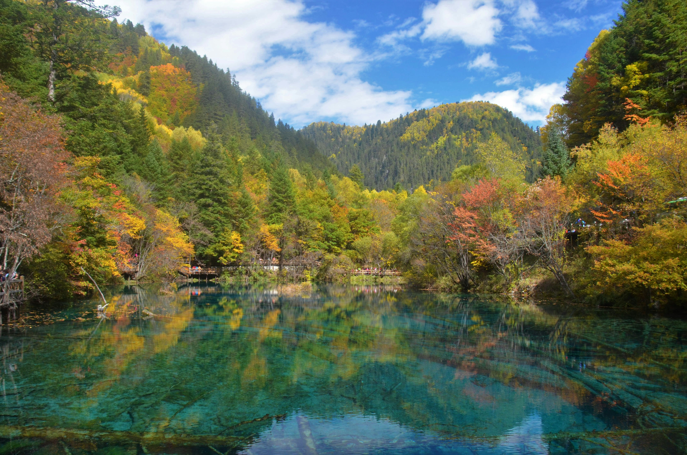

自然 · 湖泊
九寨沟
四川 · 阿坝森林、瀑布与湖泊共同构成层次丰富的山谷景观。
关于九寨沟
九寨沟的湖泊呈现出深浅不同的蓝绿色， 周围的森林和山峰倒映在清澈的水面上。
沿栈道行走，可以依次经过湖泊、瀑布和森林，观察水域与植被的变化。
推荐体验
- 沿栈道观察湖水颜色变化
- 在森林之间寻找瀑布
- 记录湖面倒影与周围山色

自然 · 湖泊
森林、瀑布与湖泊共同构成层次丰富的山谷景观。
九寨沟的湖泊呈现出深浅不同的蓝绿色， 周围的森林和山峰倒映在清澈的水面上。
沿栈道行走，可以依次经过湖泊、瀑布和森林，观察水域与植被的变化。